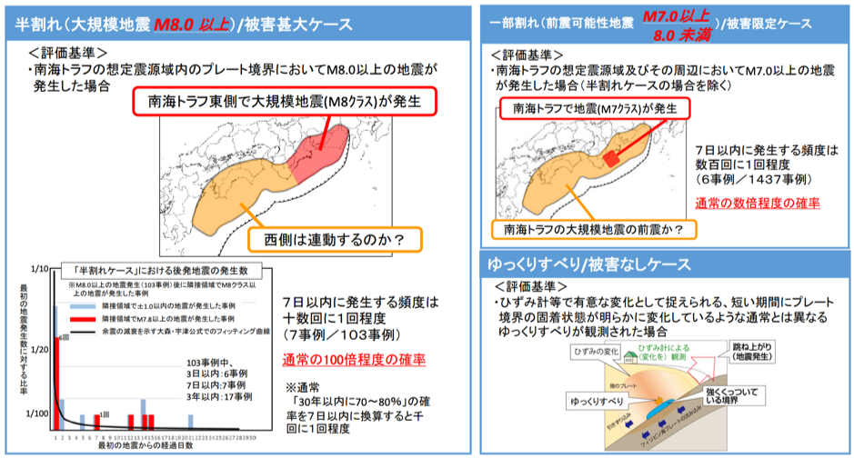
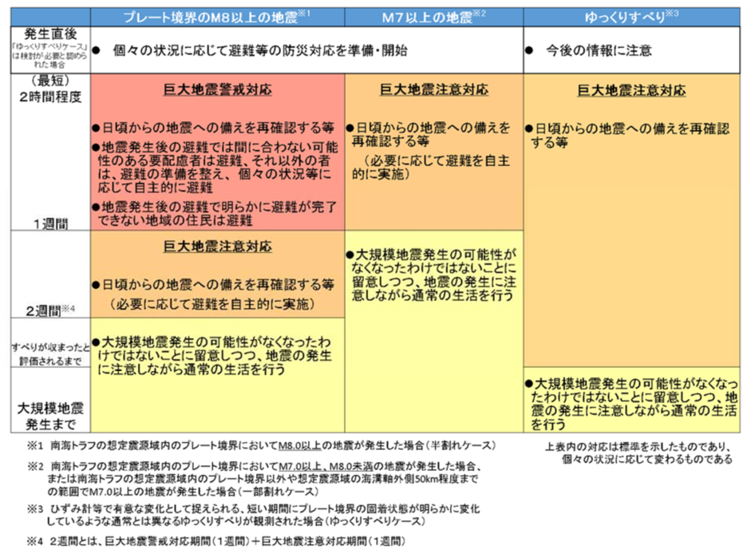

2020年05月02日
學士會会報 No.942（令和2年5月発行）に、解説記事を書きました。発行日以降、著者から原稿を公開していいとのことでしたので、以下、貼ります。
ーーーーー
南海トラフ地震臨時情報の背景と概要
福島 洋
（要旨）
今後数十年以内での南海トラフ地震の発生が懸念されている。2017年11月より、南海トラフ地震の発生可能性が平時に比べて高まったと考えられる場合に、警戒・注意を促す情報が気象庁から発表される仕組みが動いている。現在、南海トラフ地震臨時情報と呼ばれるこの情報は、南海トラフのプレート境界断層の半分あるいは一部を破壊するような地震があった場合と、異常なゆっくりすべり（ゆっくり破壊）が観測された場合に発表される。現在、地方公共団体や企業等で、南海トラフ地震臨時情報が発表された際の対応計画の作成が進んでいる。
１．南海トラフ地震と想定される被害
日本は、四枚のプレートがひしめく変動帯に位置しているので、どこでも大地震発生の懸念がある。その中で、いま首都圏直下地震とともに日本で最も警戒されている地震が、南海トラフ地震である。
南海トラフとは、静岡県の駿河湾から九州東方沖の太平洋沖で沈み込む場所にある、水深4000m級の溝のことである。ここから西南日本下に沈み込むフィリピン海プレートと上側のプレートの境界が破壊される（急激にずれる、あるいは、すべる）地震のうち、規模が大きいマグニチュードM8以上ものが総称として「南海トラフ地震」と呼ばれている。なお、この呼称の定義は、政府が報告書等において採用しているものであり、学術的に明確に定義されているわけではない。
過去には、M8クラス（最大はM8.6（推定））の南海トラフ地震が、100〜150年の平均間隔で繰り返し発生していたことがわかっている。駿河湾から九州沖までの全範囲が破壊されるとM9.0〜9.1になり、半分（例えば、紀伊半島沖より西側の半分、あるいは東側の半分）だとM8クラスになる。
南海トラフ地震が警戒されている理由は、二つある。一つは、1944年昭和東南海地震、1946年昭和南海地震から約75年経過しているので、平均間隔が100〜150年であることを考慮すると、今後数十年の間に発生する可能性が大きいと考えられることである。政府は、今後30年以内の発生確率を70〜80%（2020年1月1日時点）と評価している。なお、この発生確率の計算は、採用するモデルに依存して変わる。南海トラフ地震の場合、発生確率が大きめに評価されるモデルが採用されているので、実際には、20〜80%程度と考えておくのが妥当だと思う。いずれにしろ、高い確率である。
二つ目の理由は、西日本の太平洋側は人口と産業が密集している地域なので、地震が発生した場合に「国難」と形容されるほどの大きな被害が予想されているからである。政府の最新（2019年６月現在）のM9.1の巨大地震による被害想定では、死者数は約6〜23万人、被害額（経済活動等の影響は除く）は約100〜170兆円と見積もられている。この被害想定は、M9.1の地震の場合であるが、より起こる可能性の高いM8クラス（あるいはそれらの時間差を置いての連動）の場合、被害はより小さくなると考えられる。個人的には、南海トラフ地震が発生した場合の被害の程度は、幸運な場合で東日本大震災と同程度、最悪の場合には東日本大震災の10倍程度と考えるようにしている。
人的被害に着目すると、主要な被害は津波によるものと建物被害によるものに分けられる。特に、津波による被害が甚だしい。上述の最悪ケースの
場合、想定死者数23万人のうち、16万人は津波によるものである。東日本大震災でも津波による甚大な被害が発生したが、この時は、津波警報の発表から巨大津波到達までの時間は最も短いところでも26分（地震発生から29分）であったので、もしも巨大津波の到来が予見されていたら、かなりの人的被害は防げていたと考えられる。一方、南海トラフ地震の場合、震源域はより陸域に近い場所に位置しているため、地震発生から津波到達までの時間は短いところで３分しかない。地震が発生してすぐに避難行動を開始しないと間に合わない場所に住んだり働いていたりする人は多くいるし、沿岸では、すぐに避難行動を開始しても間に合わない可能性が高い場所もある。
２．最近の地震学の知見
ここで、やや唐突であるが、地震学の研究の進展について話を移そう。日本では、1960年代から国を挙げて地震予知の研究に取り組もうという機運が高まり、地震予知計画がスタートした。1978年には、その後の近い将来に地震予知技術が確立されるとの期待のもとに、大規模地震対策特別措置法（大震法。東海地震の警戒宣言に基づく対策が定められた法律）が成立した。この地震予知研究の流れは、1995年1月の阪神大震災を受けて、地震の調査観測や起こりうる地震の発生可能性評価に重きを置く体制に大きく変わり、稠密な観測網が整備された。その後、他国でも現代的な観測網の構築は進み、この四半世紀の間、観測データに基づく研究が活発に行われた。
その結果、１）地震の発生様式の複雑さの理解（地震予知の困難さ）、２）地震の連動の性質の理解、３）多様な「スロー地震」（通常の地震と比べ、断層の破壊速度が遅い地震）の発見等が得られた。なお、地震の連動性の観点において、南海トラフ地震については、歴史資料に基づく研究から、時間をおいて連動して発生する癖があることが明らかとなっている（昭和東南海地震・南海地震は２年差で発生、1854年安政東海地震・南海地震は約30時間の差で発生）。スロー地震に関しては、断層破壊速度が極端に遅い「ゆっくりすべり」が、東日本大震災を引き起こした2011年東北地方太平洋沖地震（M9.0）や、2014年イキケ地震（M8.2、チリ）に先行して発生していたことも明らかとなった。地震の発生を伴わないゆっくりすべりも多数見つかっているため、ゆっくりすべりを検知すれば地震の発生が予測できるという単純なものではない。巨大地震に先行するゆっくりすべりに固有の特徴があるかということは、現在の地震学研究のホットトピックの一つとなっている。
３．南海トラフ地震臨時情報
2017年8月、「南海トラフ沿いの大規模地震の予測可能性について」と題した報告書が内閣府下の調査部会から公表された。この報告書には、上述のような地震学の近年の進展を受けて、現時点において確度の高い地震の予測はできないことや、震源域全域を破壊しない規模の地震や通常と異なるゆっくりすべりが発生した場合に、地震が後続して発生する可能性が相対的に高まったとみなせるとの旨が明記されている。
この報告書を受け、気象庁は、新たな防災対応が決まるまでの当面の対応として、南海トラフ地震の可能性が普段より高まった場合などに「南海トラフ地震に関連する情報」を発表することとし、2017年11月に運用を開始した。なお、ここではいわゆる東海地震も対象に含められており、地震予知を前提にしていた大震法は事実上の凍結となった。その後、国の「南海トラフ地震防災対策推進基本計画」の変更と整合する形で情報の名称の整理が行われ、2019年5月31日から、南海トラフ地震発生の可能性が普段より高まった際に発表される情報は「南海トラフ地震臨時情報」（以下、臨時情報）という名称で発表されることになっている。
臨時情報は、図１に示されている「半割れケース」（M8.0以上の巨大地震が発生）、「一部割れケース」（M7クラスの地震が発生）、「ゆっくりすべりケース」（異常なゆっくりすべりが発生）の三つのケースで発表される。半割れケースと一部割れケースの場合に後続して巨大地震が発生する確率は、世界の地震統計データから計算すると、それぞれ、通常の100倍程度、通常の数倍程度となる。三つ目のゆっくりすべりケースは、どの程度確率が高まったのかの目安となるデータは、現時点ではほとんどない。有識者からなる検討会において、半割れケースに相当すると評価された場合は「南海トラフ地震臨時情報（巨大地震警戒）」、一部割れケースやゆっくりすべりケースに相当すると評価された場合「南海トラフ地震臨時情報（巨大地震注意）」という情報が発表される。
４．臨時情報への対応
臨時情報の仕組みがあっても、地震は前触れなく突然発生するという前提で対策を取るのが基本である。臨時情報が出されるのは、地震が「起こるかもしれない」度合いが普段よりも高まったと考えられる自然現象が観測された場合だけである。臨時情報は、突然起こったのでは防ぎきれない被害を軽減したり、より落ち着いて対処するために準備行動を取ったりするためのものである。
2019年3月に内閣府から発表された「南海トラフ地震の多様な発生形態に備えた防災対応検討ガイドライン【第一版】」には、防災対応の基本的考え方、特別の対応をすべき期間、検討すべき項目などが整理されている。臨時情報に対応すべき期間や対応の考え方は、図２の通りである。半割れケースは二週間、一部割れケースは一週間の対応期間となっているが、これは、「ある地震が発生したとき、周囲での別の地震の発生確率は瞬間的に上がり、その後時間とともに減少する」という地震学の法則と、警戒レベルを上げた特別な対応ができるのはせいぜい一週間程度、という社会的な側面が考慮された結果ある。現在、南海トラフ地震想定被害域にある地方公共団体や企業等では、このガイドラインを参考に、臨時情報が発表されたときの対応について検討が進められている。
南海トラフ地震臨時情報のような不確実性が大きい予測に関する情報を、大規模で組織的な防災対応に使う取り組みは、他の国では例がない。ほとんどの国では、建物の耐震性の確保などの基礎的な対策が足りておらず、また、不確実性の大きい情報を有効に活用できるほど、自然災害や防災の知識が社会に浸透していない。日本も、これらの課題が十分に達成されていると言える状況ではないが、少なくとも世界トップレベルであることは確かである。
臨時情報の仕組みは、災害抑止・軽減技術や社会の対応能力の点で（ある程度）成熟した日本において、さらなる災害軽減を図るための新たな挑戦である。予想される被害（特に津波被害）が甚大な南海トラフ地震だからこそ仕組みが導入された、という側面も多分にあるだろう。起こりうる様々な事態に対応する必要があるため、ガイドラインに従うだけでは災害軽減は達成できない。個人、地域、会社、地方行政、国といった様々なレベルで、共に知恵を絞って解決策を探っていくことが、被害を減らすことにつながると私は考えている。

図１：臨時情報が発表される三つのケース。（内閣府「南海トラフ地震の多様な発生形態に備えた防災対応検討ガイドライン【第１版】」概要より）

図２：三つのケースごとの対応すべき期間と対応の考え方。（内閣府「南海トラフ地震の多様な発生形態に備えた防災対応検討ガイドライン【第１版】」より）
Return to Yo Fukushima’s website top page